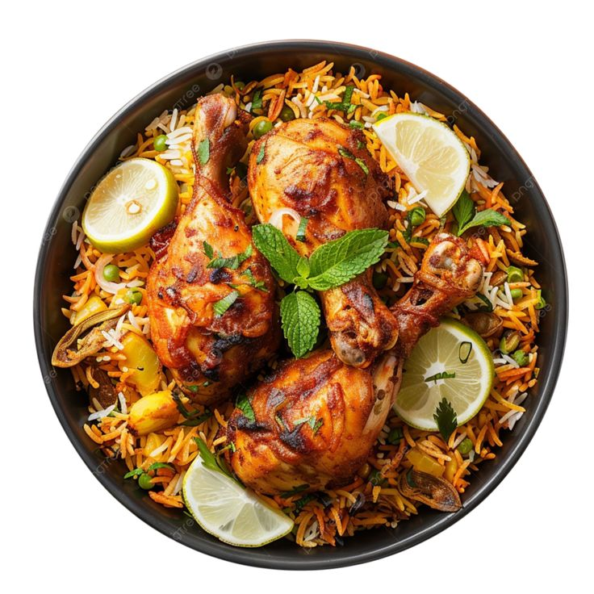
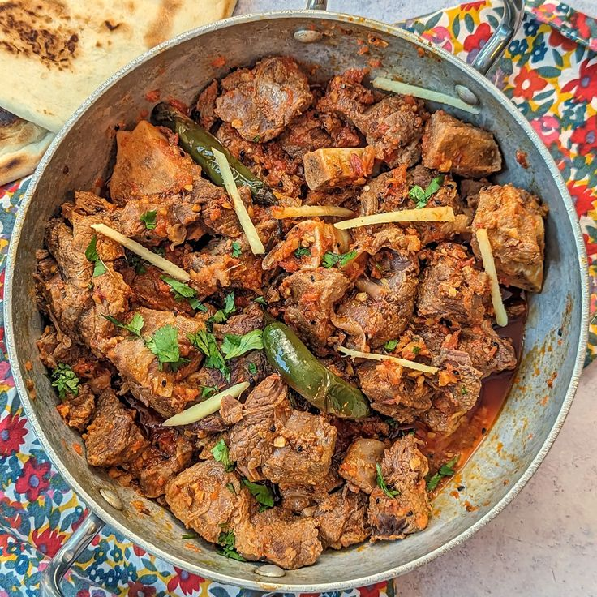
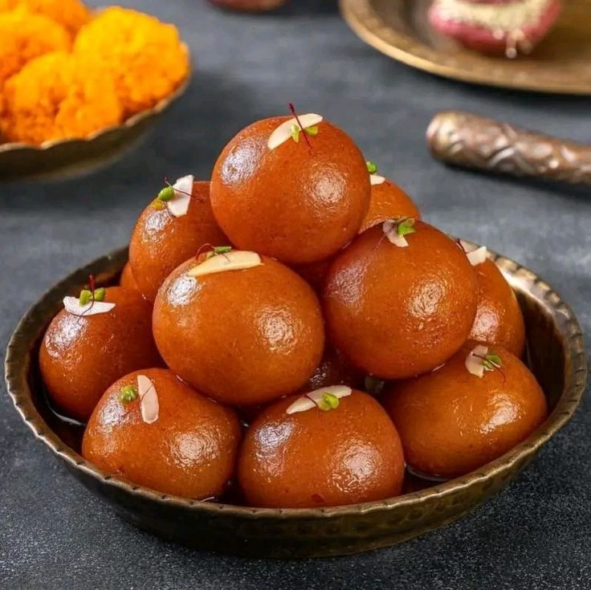

Chicken Biryani
A fragrant rice dish made with aromatic spices and marinated chicken.
Serving Size: 4
Prep Time: 30 mins | Cook Time: 60 mins
Ingredients
- 2 cups basmati rice
- 500g chicken, cut into pieces
- 2 onions, sliced
- 1/2 cup yogurt
- Spices (turmeric, cumin, coriander, garam masala)
Equipment
- Large cooking pot
- Frying pan
- Knife and cutting board
Instructions
- Marinate chicken with yogurt and spices.
- Fry onions until golden, then add chicken.
- Cook rice separately, then layer with chicken.

Mutton Karahi
A rich, spicy tomato-based mutton dish cooked in a wok.
Serving Size: 4
Prep Time: 20 mins | Cook Time: 50 mins
Ingredients
- 500g mutton, cut into pieces
- 4 tomatoes, finely chopped
- 2 onions, sliced
- 2 green chilies
- 1 tbsp ginger-garlic paste
- Spices (red chili powder, garam masala, salt)
Equipment
- Wok or karahi
- Knife and cutting board
- Stirring spoon
Instructions
- Heat oil and sauté onions until golden.
- Add ginger-garlic paste and cook for 2 minutes.
- Add mutton and spices, and cook until tender.
- Add tomatoes and cook until the oil separates.
- Garnish with green chilies and serve hot.

Gulab Jamun
Delicious deep-fried milk dumplings soaked in sugar syrup.
Serving Size: 8
Prep Time: 15 mins | Cook Time: 20 mins
Ingredients
- 1 cup milk powder
- 2 tbsp all-purpose flour
- 1/4 tsp baking soda
- 2 tbsp ghee
- 2 cups sugar
- 2 cups water
- 1/2 tsp cardamom powder
Equipment
- Deep frying pan
- Mixing bowl
- Syrup pot
Instructions
- Mix milk powder, flour, baking soda, and ghee to form a dough.
- Make small balls from the dough.
- Deep-fry the balls until golden brown.
- Boil sugar and water to make syrup, then add cardamom powder.
- Soak the fried balls in the syrup for 2 hours and serve.
